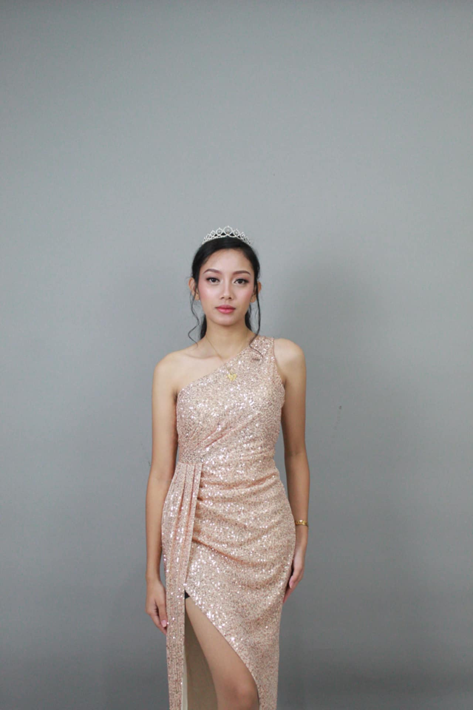

This portfolio highlights my academic projects in digital media. It combines rotoscoping techniques with 3D modeling to demonstrate both animation and compositing skills. Explore the Solar System renders, 1 minute rotoscoping video, and more.